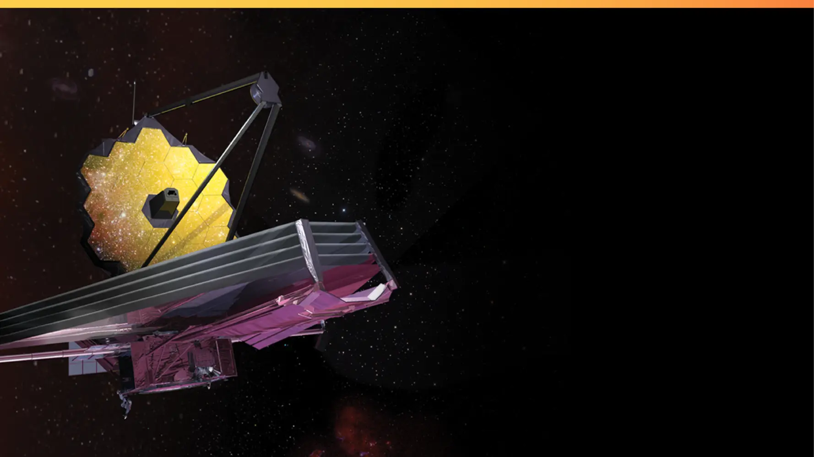
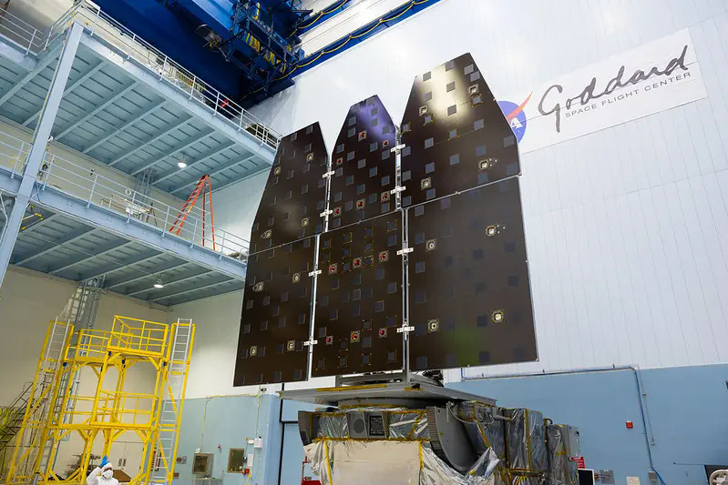
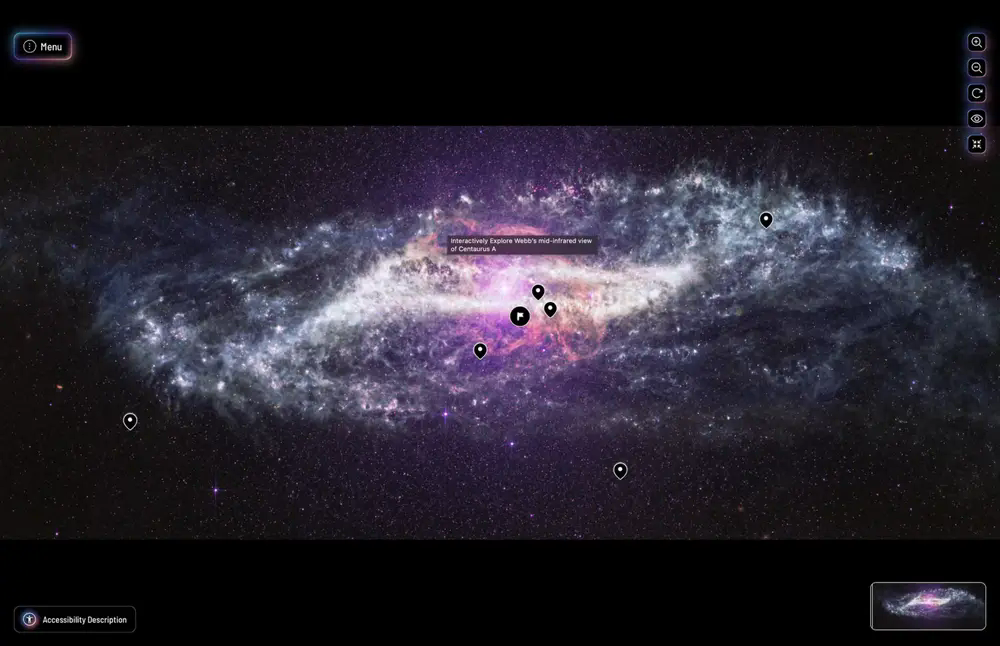

01
01The Informal Learning Network
Building the relationships, resources, evidence, and shared capacity that help NASA science become locally meaningful across museums, libraries, and community institutions.
Read case study↗Work · A portfolio ecosystem
Across missions, institutions, and communities, my work takes different forms. The throughline is systems value: stronger fields, meaningful participation, usable interpretation, evidence-led improvement, clear science translation, and institutional change.
Projects overlap by design. A network can also be an evaluation system. A public experience can also be a research instrument. The work becomes more powerful when those relationships stay visible.
Filter by value created
01Building the relationships, resources, evidence, and shared capacity that help NASA science become locally meaningful across museums, libraries, and community institutions.
Read case study↗
02Turning launch and First Images into a supported national participation system—combining trusted hosts, usable resources, sustained communication, and structured access to experts.
Read case study↗
03Applying lessons from Webb to build facilitator pathways, resources, scientist access, and nationwide host participation before a major mission milestone.
Read case study↗
04Shaping audience strategy for an interactive exploration of Webb imagery—and leading evaluation of engagement, usability, mission messaging, and future product decisions.
Read case study↗Reframing black holes as drivers of galaxy evolution, using Webb’s view of the early universe and “Little Red Dots” to create a coherent public-learning pathway.
In development 06
06Partnering with a public garden to integrate STScI cosmic imagery into seasonal interpretation—connecting patterns in the living world with structures across the universe.
Partnership in progressResearching recognition governance, applied-credit reliability, postsecondary value, and the institutional commitments required to turn validated learning into genuine advancement.
Explore research & ideas↗No projects match this value yet.
The portfolio thesis
The deliverable is rarely the whole intervention.
A strong resource matters. So do the relationships that carry it, the evidence that improves it, the institutional choices that sustain it, and the people who decide it belongs to them. I design with that whole system in view.
How I work →